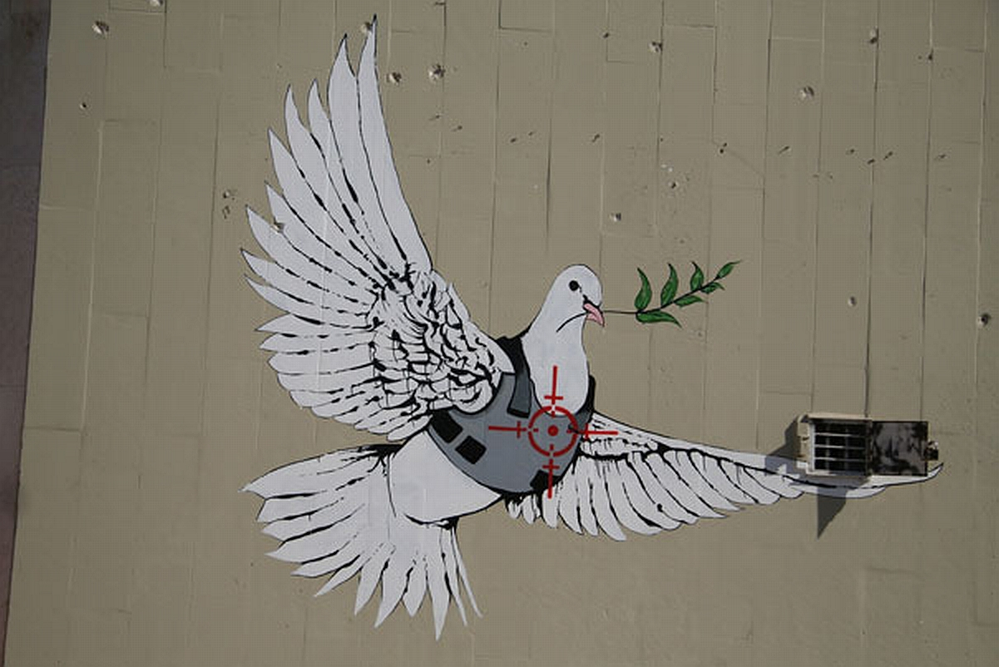
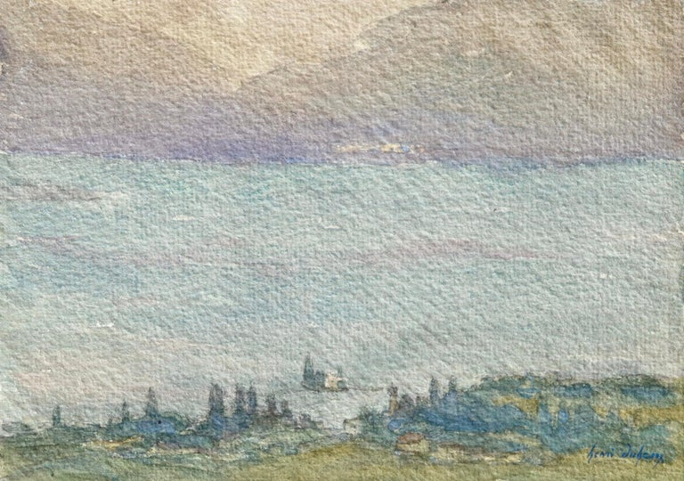
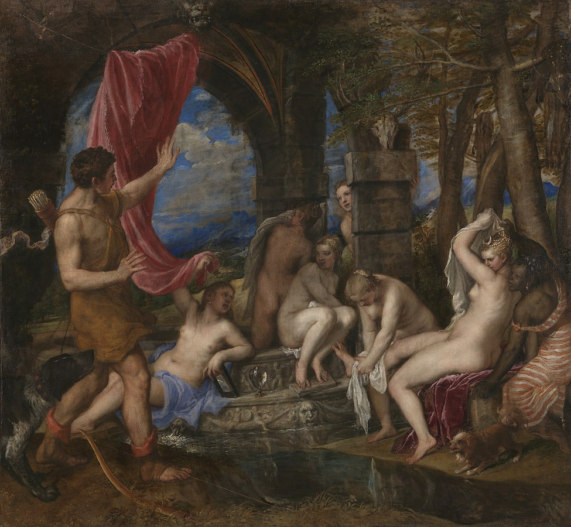
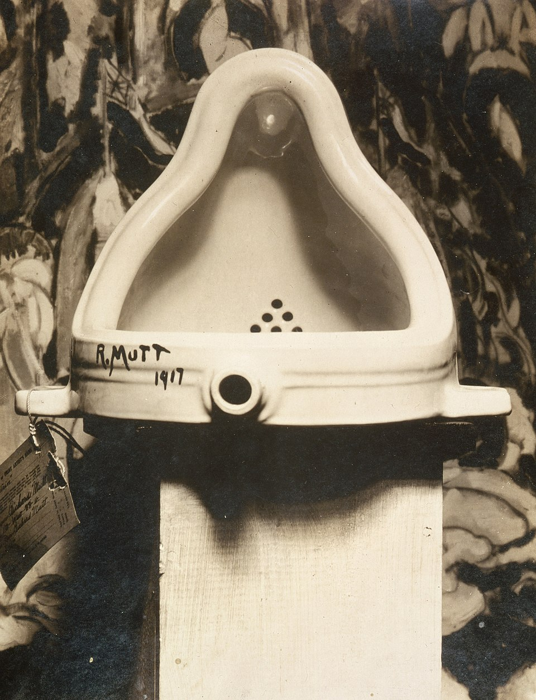
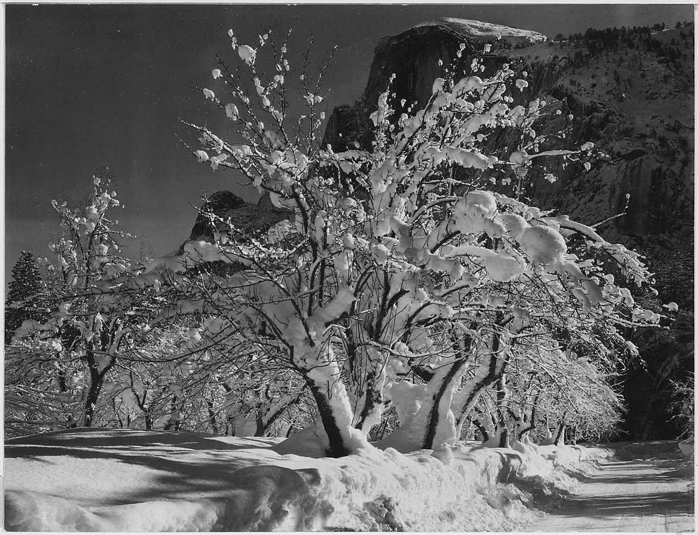
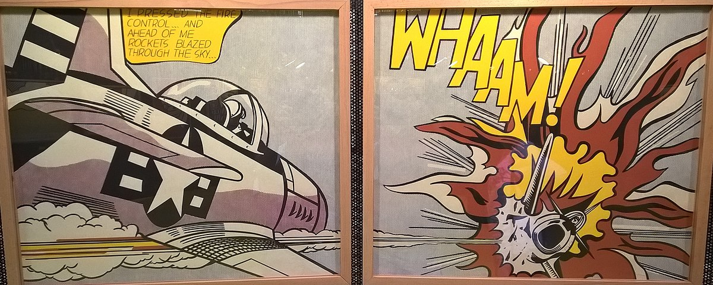
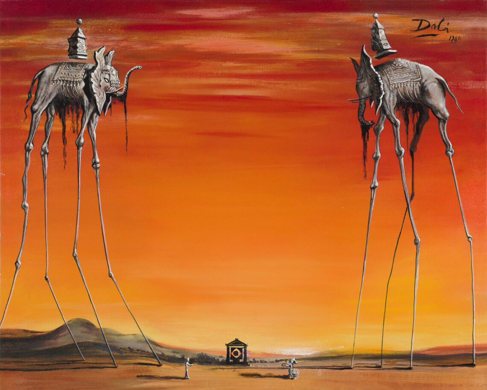
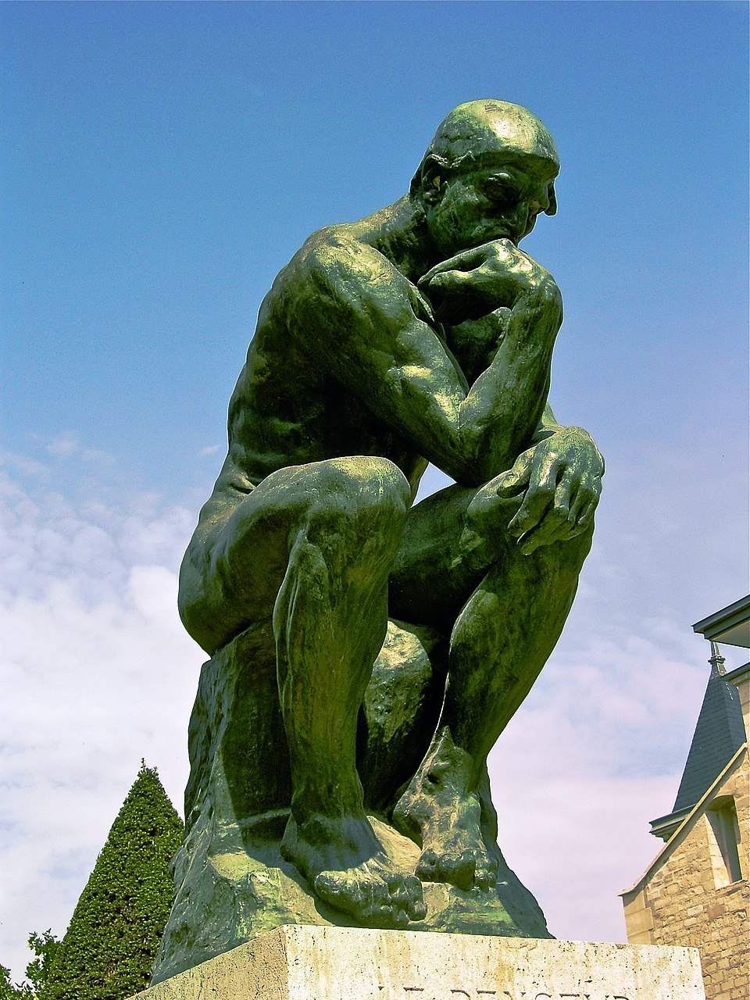
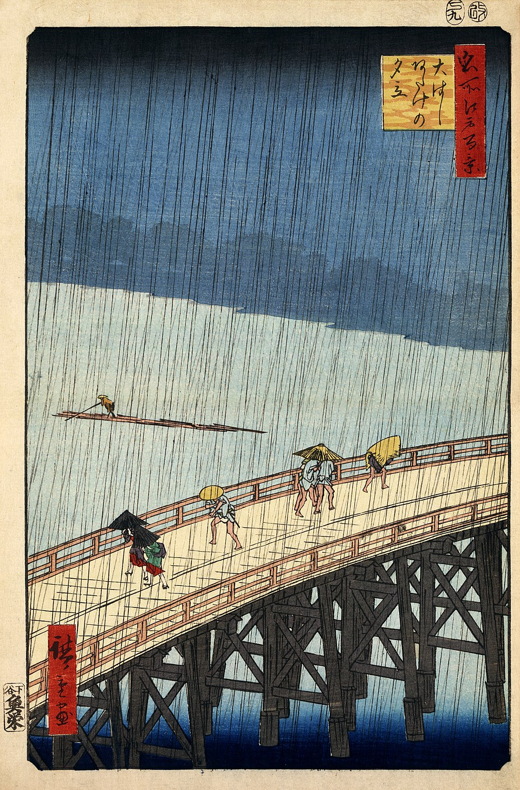
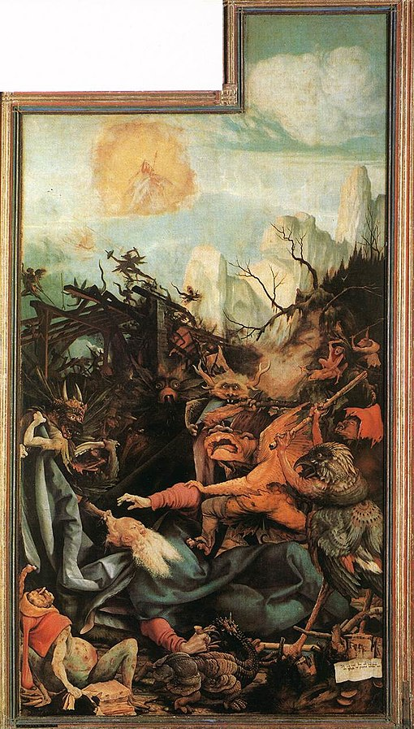

Dit is mijn kunstlogboek die ik heb ingedeeld in de verschillend categorieën die gevraagd zijn.
Hoe gebruik je dit logboek?
Gebruik de navigatie of zoekbalk om snel een thema te vinden. Elk thema bevat vijf kernpunten om je te helpen analyse, experiment en reflectie te structureren.
De naam van de expo is het fotomuseum in Antwerpen-Zuid.
Waarom ik het museum koos is omdat, ik geïntereseerd ben in foto's. Plus ik was er nog nooit geweest.
Mijn algemene indruk was best indrukwekkend. Maar ik was ook wel teleurgesteld. Want ik had er meer van verwacht.
Mijn favoriete werk was de lamp waar ik bij staat. Ik vind dat het mooi is en een goede vibe afgeeft. De gegevens van het kunstwerk weet ik niet want het stond daar tijdelijk. Ik kon ook geen enkele informatie erover vinden.
Street art

Kunstenaar: Banksy, de bekende en mysterieuze street-art artiest.
Titel: Peace Dove.
Datum + reden: 2005 – gemaakt als duidelijke kritiek op geweld in conflictgebieden.
Stroming: Street art.
Waarom gekozen: Omdat het een heel bekend werk is met een sterke boodschap.
Mening: Het ziet er misschien simpel uit, maar het komt echt hard binnen. Je voelt meteen wat hij wil zeggen, en dat maakt het gewoon een sterk kunstwerk.
Barok
Kunstenaar: Peter Paul Rubens.
Titel: De Kroning van Maria.
Datum + reden: ca. 1625 – gemaakt als indrukwekkend altaarstuk voor de kerk.
Stroming: Barok.
Waarom gekozen: Typisch barok: veel drama, kleur en beweging.
Mening: Alles ziet er super groot en overdreven uit, maar op een goeie manier. Je merkt dat er echt moeite en detail in zit, het blijft je aandacht pakken.
Aquarelle

Kunstenaar: Paul Klee.
Titel: Aquarelles of Lake Geneva.
Datum + reden: 1914 – ontstaan tijdens een reis waarbij hij licht en landschap onderzocht.
Stroming: Modernisme.
Waarom gekozen: Mooie, zachte aquareltechniek.
Mening: Dit geeft een heel rustige vibe. De kleuren en vormen zijn zacht en relaxed, alsof je even weg bent van alles.
Bloemen
Kunstenaar: Vincent van Gogh.
Titel: Irissen.
Datum + reden: 1889 – geschilderd in de kliniek als manier om tot rust te komen.
Stroming: Post-impressionisme.
Waarom gekozen: Een mooi bloemstuk.
Mening: De kleuren schitteren echt van het schilderij af. Het voelt heel levendig, en ik werd er automatisch vrolijker van.
Griekse mythologie

Kunstenaar: Titiaan.
Titel: Diana en Actaeon.
Datum + reden: 1556–1559 – gemaakt in opdracht van aristocraten die fan waren van klassieke mythes.
Stroming: Hoog-renaissance.
Waarom gekozen: Mooie weergave van een mythe.
Mening: Dit werk is vooral heel dramatisch. Je ziet meteen dat er een verhaal achter zit, en dat maakt het spannend om naar te kijken.
Conceptionele kunst

Kunstenaar: Marcel Duchamp.
Titel: Fountain.
Datum + reden: 1917 – ontworpen om de definitie van kunst volledig op zijn kop te zetten.
Stroming: Dada / conceptuele kunst.
Waarom gekozen: Een belangrijk werk dat de kunstgeschiedenis veranderde.
Mening: Ik vond het eerst raar, maar toen ik er een tijdje naar keek. Vond ik het nog wel mooi.
Oranje
Kunstenaar: Mark Rothko.
Titel: No. 14 (Orange).
Datum + reden: 1960 – bedoeld om pure emotie over te brengen via kleurvlakken.
Stroming: Abstract expressionisme.
Waarom gekozen: Een typisch en herkenbaar werk van Rothko.
Mening: Op het eerste zicht lijkt het gewoon kleur, maar hoe langer je kijkt, hoe meer sfeer erin zit.
Fotografie

Kunstenaar: Ansel Adams.
Titel: Moon and Half Dome.
Datum + reden: 1960 – gemaakt om de kracht van natuur en licht prachtig vast te leggen.
Stroming: Landschapsfotografie.
Waarom gekozen: Een klassiek meesterwerk.
Mening: Het ziet er super strak en krachtig uit. Ik voel echt hoe groot en indrukwekkend die natuur is.
Pop art

Kunstenaar: Roy Lichtenstein.
Titel: Whaam!
Datum + reden: 1963 – geïnspireerd door strips en massamedia.
Stroming: Pop art.
Waarom gekozen: Een van de bekendste popartwerken ooit.
Mening: Heel energiek, bijna alsof een stripboek tot leven komt.
Salvador dali

Kunstenaar: Salvador Dalí.
Titel: The Elephants.
Datum + reden: 1948 – bedoeld om droombeelden en symboliek te verbeelden.
Stroming: Surrealisme.
Waarom gekozen: Typisch Dalí: Het is raar maar bekend op zijn naam.
Mening: Het werk heeft me heel erg gefascineerd.
Beeldhouwkunst

Kunstenaar: Auguste Rodin.
Titel: The Thinker.
Datum + reden: 1904 – oorspronkelijk een onderdeel van “De Poort van de Hel”, symbool voor nadenken.
Stroming: Realisme / symbolisme.
Waarom gekozen: Een wereldberoemde sculptuur.
Mening: Heel krachtig in z’n eenvoud. Het lijkt alsof hij echt diep aan het nadenken is, en dat maakt het beeld super sterk.
Drukkunst

Kunstenaar: Utagawa Hiroshige.
Titel: Sudden Shower over Shin-Ōhashi Bridge and Atake.
Datum + reden: 1857 – toont het dagelijkse leven en het weer in Edo op een prachtige manier.
Stroming: Ukiyo-e.
Waarom gekozen: Een bekend en mooi voorbeeld van Japanse houtdruk.
Mening: Het ziet er heel sfeervol uit, je voelt bijna die regen vallen. Het geeft een mooie, rustige Japanse vibe.
Monsters

Kunstenaar: Matthias Grünewald.
Titel: The Temptation of St. Anthony.
Datum + reden: ca. 1516 – onderdeel van een altaarstuk vol demonische figuren en beproevingen.
Stroming: Renaissance.
Waarom gekozen: Uitgesproken, bizarre en expressieve monsters.
Mening: Best donker en chaotisch, maar daardoor juist interessant. De monsters zijn echt vreemd, en dat maakt het werk heel boeiend om te bekijken.
.jpg)
.jpg)
.jpg)
.jpg)
.jpg)